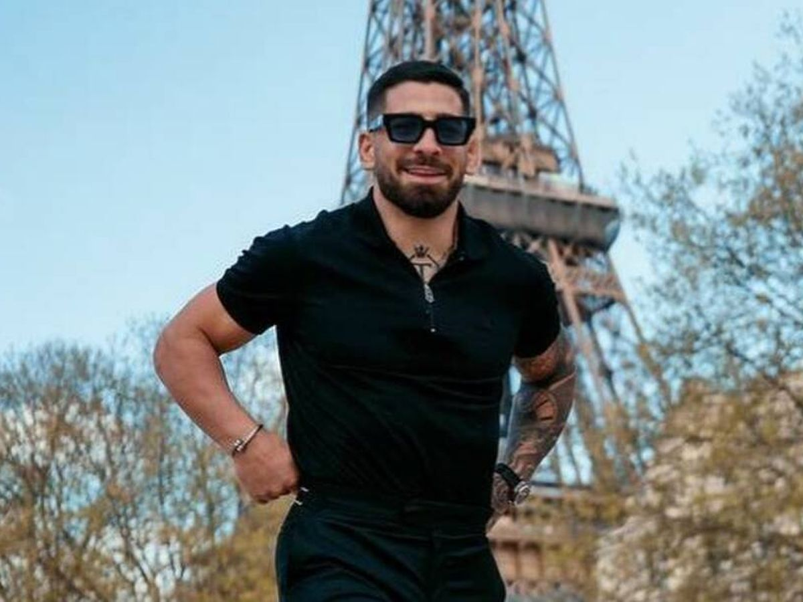
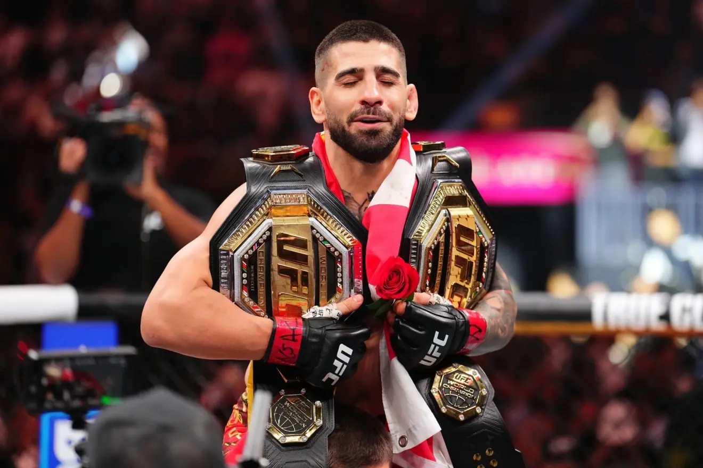

Explora la carrera del primer campeón español de la UFC.

Ilia Topuria es el primer campeón de la UFC español de la historia. Actualmente compite en la división de peso ligero de la Ultimate Fighting Championship, donde es el actual Campeón Mundial de Peso Ligero de UFC y ha sido Campeón Mundial de Peso Pluma de UFC

Momento en que Ilia se corona doble campeón mundial. Topuria se enfrentó a Charles Oliveira el 28 de junio de 2025, por el Campeonato Vacante de Peso Ligero de UFC en UFC 317. Topuria venció a Oliveira por KO en el primer asalto en el minuto 2:27 de la pelea. Esta victoria lo hizo merecedor de su quinto premio de Actuación de la Noche.